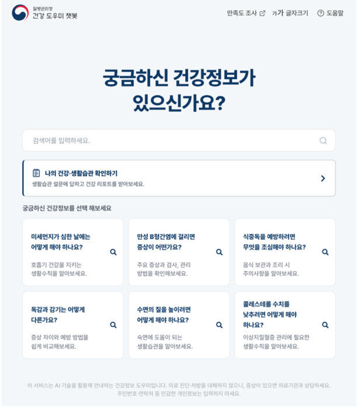

Executive Summary
질병관리청과 과학기술정보통신부가 'AI 대국민 건강도우미 챗봇 서비스'를 10월 28일 전 국민에게 열었다. 지역사회건강조사 누리집에서 키와 몸무게 같은 기본 신체 지표와 생활습관 설문에 답하면, 성별과 연령이 비슷한 또래 집단과 비교한 내 건강 위치와 고혈압·당뇨·이상지질혈증·비만 위험도가 신호등과 그래프로 돌아온다. 과기정통부 공공 AI 전환(AX) 프로젝트의 하나이고, 밑에 깔린 것은 지난 20년간 쌓인 500만 건 이상의 국가 건강조사 자료다.
신호등 색의 뜻은 비교 대상이 누구냐에 달려 있다. 그런데 발표 어디에도 그 또래가 어느 조사의, 어느 해의, 몇 살 간격 집단인지 적혀 있지 않다. 챗봇이 올라앉은 지역사회건강조사는 2008년에 시작해 2010년부터는 문항을 1년·2년·4년 주기로 나눠 묻는 순환조사 체계로 돌아간다. 해마다 같은 질문을 같은 밀도로 던져 쌓은 더미가 아니라는 뜻이다.
1절부터 3절까지는 두 부처의 발표문, 그리고 질병관리청이 공개한 지역사회건강조사 자료와 조사 방식 개선 보고를 따라간다. 해외 코호트 연구를 끌어오는 4절과 데이터 쪽 숙제를 정리하는 5절은 이 글의 해석이다.
주요 수치
챗봇이 돌려주는 또래 비교가 어떤 재료로 만들어지는지는 질병관리청이 해마다 공개해 온 조사 자료에 적혀 있다. 그 재료의 모양을 네 숫자로 추렸다.
출처: 대한민국 정책브리핑 · 질병관리청 2025년 조사 결과 · 지역사회건강조사 순환조사 개요
500만 건 이상
챗봇이 쓴다는 국가 건강조사 기록
한 건이 사람 한 명인지 응답 한 줄인지는 불분명하다
18회
지역사회건강조사가 지금까지 돌아간 횟수
2008년 시작, 공개된 원시자료는 2025년 조사까지다
약 900명
시·군·구 한 곳의 한 해 표본
보건소마다 목표오차 ±3%를 맞추려고 잡은 크기다
네 해
지역선택문항이 멈춰 있던 기간
2020~2023년 중단, 2024년에 다시 물었다
키와 몸무게를 넣으면 신호등이 돌아온다
질병관리청과 과기정통부는 10월 28일 'AI 대국민 건강도우미 챗봇 서비스'를 본격 개방했다고 밝혔다. 지역사회건강조사 누리집으로 들어가면 국민 누구나 시간 제한 없이 쓸 수 있다. 과기정통부가 공공 부문에 AI를 붙이려고 벌인 공공 AI 전환(AX) 프로젝트의 결과물 가운데 하나다.
쓰는 쪽에서 보면 할 일은 두 가지다. 하나는 키와 몸무게 같은 기본 신체 지표와 일상생활 습관에 관한 간이 설문에 답하는 것이고, 다른 하나는 궁금한 것을 그냥 물어보는 것이다. 앞쪽에 답하면 성별과 연령이 비슷한 또래 집단과 비교한 건강 위치, 그리고 고혈압·당뇨·이상지질혈증·비만의 위험도가 건강 신호등과 그래프로 뜬다. 뒤쪽은 수면·운동·식습관 같은 일상 건강관리 질문을 24시간 받아 주는 상담 기능이다.

두 부처가 신뢰성의 근거로 든 것은 데이터의 출처와 검증 절차다. 의료·AI 전문가 자문단의 검증을 거친 공신력 있는 보건 데이터를 쓰고, 국가 보안 규정에 따른 암호화 체계를 적용했다고 적었다. 한계도 같이 적어 두었다. 챗봇이 내놓는 건강리포트와 상담 내용은 건강관리를 돕기 위한 참고 정보이며 의료진의 진단이나 치료를 대신하지 않는다는 문장이다.
임승관 질병관리청장은 이번 개방을 "공공 보건 데이터를 국민에게 다시 돌려드리는 데이터 기반 공공 AX 행정의 대표적 사례"라고 말했다. 이도규 과기정통부 정보통신정책실장은 "국민의 건강을 증진하는 AI 서비스로서 국민의 삶에 실질적 도움이 되는 사례"라고 평가하며 관계 부처와 협력해 국민이 체감할 AI 서비스를 더 내놓겠다고 했다.
발표문에 없는 것도 있다. 어떤 AI 모델을 썼는지, 어떤 구조로 또래 비교값을 계산하는지는 두 부처 보도자료에도, 이를 받아 쓴 기사들에도 나오지 않는다. "AI 기술을 접목했다"는 표현이 그 자리를 대신한다. 그래서 챗봇이 돌려주는 숫자를 검증하려면 모델이 아니라 그 밑에 깔린 조사 자료를 봐야 한다.
또래를 만든 조사는 동네 통계용이다
지역사회건강조사는 2008년부터 해마다 돌아가는 국가승인통계다. 근거 법률은 지역보건법 제4조이고, 이 조사를 하는 목적은 지역 주민의 건강 실태를 파악해 지역보건의료계획을 세우는 데 쓸 기초자료를 마련하는 것이다. 이름에 이미 답이 들어 있다. 전국 평균을 내려고 만든 조사가 아니라 시·군·구 단위 숫자를 내려고 만든 조사다.
표본을 잡는 방식이 그 목적을 그대로 따른다. 시·군·구마다 약 900명씩 뽑아 보건소가 조사하고, 그것을 다 합치면 전국 만 19세 이상 성인 23만 명가량이 된다. 2025년 조사는 258개 지역에서 231,615명, 2026년 조사는 260개 보건소에서 약 23만 명이었다. 인구 70만 명인 도시에서도 900명, 인구 3만 명인 군에서도 900명이다. 동네마다 같은 정밀도로 숫자를 내려는 설계이니 당연한 일이지만, 전국을 인구 비례로 뽑은 표본과는 구성이 다르다.
표본을 뽑을 때도 기준은 그 단위다. 먼저 통·반·리를 확률비례계통추출로 고르고, 거기서 표본가구를 다시 계통추출한다. 질병관리청이 표본선정 안내에 적어 둔 설계 목표는 보건소별 평균 900명, 목표오차 ±3%다. 오차를 ±3% 안에 묶겠다고 약속한 대상이 전국 평균이 아니라 보건소 하나하나라는 뜻이다. 전국 숫자는 이 설계가 바로 내주는 값이 아니라 뒤에 합쳐서 만드는 값이다.
그래서 이 자료로 "전국의 40대 남성 평균"을 만들려면 한 단계가 더 필요하다. 지역별로 과대·과소 대표된 몫을 인구 비례에 맞게 다시 가중해 합쳐야 한다. 질병관리청이 해마다 내는 전국 단위 건강지표는 그 보정을 거쳐 나온 값이다. 챗봇이 돌려주는 또래 분포도 같은 보정을 거쳤을 가능성이 높지만, 어떤 가중치를 어느 연도 인구에 맞춰 적용했는지는 공개되지 않았다.
조사 설계가 틀렸다는 말이 아니다. 동네별 지표를 내려고 만든 자료를 개인별 또래 비교에 쓰려면 변환이 한 번 들어가야 하고, 그 변환이 어떻게 됐는지가 답의 정확도를 가른다는 말이다. 이용자는 신호등 색만 받는다. 그 색이 어떤 가중치를 지나왔는지 알 길은 없다.
묻는 문항이 해마다 달라진다
20년 치를 합쳤다는 말은 같은 질문을 20번 반복했다는 뜻으로 읽히기 쉽다. 지역사회건강조사는 그렇게 돌아가지 않는다. 2010년부터 순환조사 체계를 쓰기 때문이다. 모든 문항을 해마다 묻는 대신 주기를 나눠 묻고, 전체 주기는 지역보건의료계획 주기에 맞춰 4년이다. 2011년 조사가 그 예다. 그해 물은 248개 문항 가운데 181개가 1년 주기, 50개가 2년 주기, 17개가 4년 주기였다.
문항 목록 자체도 고정돼 있지 않다. 조사는 전국 공통지표와 지역선택지표로 나뉘는데, 지역선택조사는 코로나19로 2020년부터 멈췄다가 2024년에야 재개됐다. 그해 조사는 전국 공통문항 172개에 지역마다 6개에서 37개까지 선택문항을 붙여 170~210개 남짓을 물었다. 2026년에는 중앙부처의 현안 정책 수요를 받는 정책현안지표와 지역특화지표가 새로 들어갔고, 노쇠 항목이 처음으로 전수 조사에 포함됐다.
이 구조가 또래 비교에 남기는 문제는 두 갈래다. 하나는 밀도다. 4년 주기 문항으로 만들어진 또래 분포는 1년 주기 문항으로 만들어진 것보다 적은 해의 자료 위에 서 있다. 다른 하나는 접합이다. 문항 문구가 바뀐 해의 응답을 이전 해의 응답과 같은 값으로 취급하려면 둘을 잇는 규칙이 필요하고, 그 규칙이 틀리면 특정 연도 구간에서만 분포가 밀린다.
챗봇이 받는 입력도 원 조사와 같지 않다. 질병관리청이 밝힌 입력은 신체 지표와 생활습관에 관한 간이 설문이다. 원 조사는 해마다 5월 16일부터 7월 31일까지 조사원이 태블릿PC에 담긴 전자조사표를 들고 가구를 찾아가 1:1로 묻는다. 그렇게 받은 170~210개 문항의 응답과, 웹 화면에서 혼자 채우는 간이 설문은 같은 질문일 수 없다. 두 문항 묶음을 어떻게 맞붙였는지가 신호등 색을 정하는데, 그 대응표는 어디에도 없다.
묻는 방식이 답을 바꾼다는 이야기는 질병관리청이 먼저 꺼냈다. 2008년부터 2025년까지 이 조사는 조사원이 찾아가는 1:1 대면면접으로만 이뤄졌는데, 1인 가구와 맞벌이 가구가 늘고 사생활을 지키려는 태도가 강해지고 비대면 문화가 빠르게 퍼지면서 그 방식이 예전만큼 들어맞지 않게 됐다. 조사를 거부하는 집이 늘어 표본가구대체율이 올라가면 표본의 대표성과 결과의 신뢰성이 함께 떨어진다는 우려가 조사 안쪽에서 나왔다. 그래서 질병관리청은 2025년 12월까지 전국 9개 보건소 약 8,100명을 대상으로 혼합조사 시범사업을 진행했다. 대면을 원칙으로 하되 응답자가 원하거나 대면이 어려우면 비대면으로 받는 방식이고, 이 시범사업이 확인하려는 것 가운데 하나가 조사 방법을 바꿀 때 따라오는 모드효과, 그러니까 묻는 방식 때문에 응답 분포가 달라지는 현상이다.
챗봇은 그 시범사업이 재고 있는 전환을 이미 건너뛴 자리에 서 있다. 사람이 찾아와 묻던 항목을 이용자가 혼자 화면에서 채우게 하고, 그 답을 18년 치 대면조사로 만든 분포와 맞댄다. 대면으로 모은 수치와 비대면으로 모은 수치를 섞어도 되는지는 조사를 만든 쪽이 지금 재고 있는 질문이다.
데이터를 다루는 쪽에서 이 작업은 낯익다. 연도마다 스키마가 다른 테이블을 하나로 합칠 때 하는 일과 같다. 열 이름을 맞추고, 값의 척도를 통일하고, 빠진 해를 어떻게 다룰지 정한다. 공공 데이터가 AI에 쓸 만해진다고 할 때 실제로 하는 일이 대개 이런 것들이다. 모델을 고르는 일은 그다음이다.
기준 집단이 낡으면 비교가 틀린다
또래와 비교해 건강 상태를 알려 주는 방식은 새로운 발상이 아니다. 병원 검사 결과지에 찍히는 정상 범위도 같은 원리로 정한 값이다. 과거 어느 시점에 모은 기준 집단의 가운데 95%를 정상으로 잡는 방식이다. 이 방식의 약점도 오래전부터 알려져 있다. 기준 집단이 지금의 인구를 닮지 않으면 정상의 선도 함께 틀어진다.
세대가 바뀌면 같은 나이의 건강도 바뀐다는 증거가 쌓여 있다. 영국 출생 코호트 연구를 묶어 본 연구가 2026년 인구학 학술지 Population Studies에 실렸다. 1946년생부터 2000~2002년생까지 여섯 개 코호트를 같은 나이에서 비교한 논문 51편을 모았더니, 뒤에 태어난 세대의 건강이 나아졌다는 증거가 거의 없었다. 신체·정신 건강 문제의 유병률은 비슷하거나 오히려 나중 세대에서 더 나쁜 쪽이었다. 1970년생과 1989~1990년생을 스물다섯 안팎에서 맞대 보면 삶에 대한 불만족이 남성 20.9%에서 31.5%로 올라 있었다.
이 결과를 또래 비교에 옮기면 함의가 분명해진다. 20년 치를 한 덩어리로 합쳐 기준 집단을 만들면, 그 안에는 2008년의 40대와 2025년의 40대가 같은 무게로 섞인다. 둘은 다른 사람들이다. 식습관도, 앉아 있는 시간도, 흡연율도 다르다. 합쳐 놓은 평균은 어느 쪽도 아닌 가상의 또래가 되고, 비교 대상이 가상이면 신호등 색의 뜻도 흐려진다.
또래의 폭도 같은 문제를 안고 있다. 질병관리청 발표는 성별과 연령이 유사한 집단이라고만 적었다. 유사함의 폭이 5세인지 10세인지가 그다음 질문인데, 발표는 거기서 멈춘다. 구간을 좁히면 비교는 정확해지지만 그 칸에 들어가는 표본이 줄어 값이 흔들리고, 넓히면 값은 안정되지만 마흔한 살이 마흔아홉 살과 한 칸에 묶인다. 어느 쪽을 골랐는지에 따라 같은 사람이 노란불을 받을 수도 초록불을 받을 수도 있다.
페블러스가 이 서비스를 주목하는 이유
공공 데이터가 AI에 쓸 수 있는 형태로 정리된다는 말은 그동안 주로 문서 속 구호였다. 이번 챗봇은 그 말이 시민 한 명의 손끝에서 어떤 모양이 되는지 보여 준다. 20년간 통계표와 원시자료로만 존재하던 조사 결과가 '나와 비슷한 사람들'이라는 비교군으로 바뀌어 돌아온다. 페블러스가 공공데이터와 AI 활용 사이의 거리를 다룬 앞선 글에서 적은 간극이 실제로 좁혀진 사례이기도 하다.
다만 반대 방향의 교훈도 같이 있다. 데이터가 AI에 쓸 만해졌다고 해석까지 저절로 정확해지지는 않는다. 20년 치 원자료를 하나의 비교 모델로 잇는 일, 그러니까 표본을 다시 가중하고 바뀐 문항을 매핑하고 빠진 해를 보정하는 일이 이 서비스에서 가장 품이 많이 든 부분이었을 텐데, 발표는 그 작업을 "AI 기술을 접목했다"는 한 문장으로 건너뛴다. 가장 어려운 일이 가장 짧게 적혔다.
신호등 옆에 네 줄만 더 있으면 이용자가 결과를 읽는 방식이 달라진다.
- 이 또래 분포가 어느 조사의 몇 년도 자료로 만들어졌는지. 20년을 통째로 썼는지, 최근 몇 해에 가중을 더 줬는지에 따라 같은 입력에서 다른 색이 나온다
- 또래 구간을 몇 살 간격으로 잡았는지. 마흔한 살이 어느 칸에 들어갔는지를 알면 결과의 민감도를 가늠할 수 있다
- 문항이 바뀐 해의 값을 어떻게 이어 붙였는지. 2020~2023년처럼 특정 문항이 비어 있는 구간을 어떻게 다뤘는지가 여기 들어간다
- 화면에 혼자 적은 답을 대면면접으로 모은 분포와 어떻게 맞댔는지. 질병관리청이 시범사업까지 해 가며 재고 있는 모드효과가 챗봇에서는 이미 일어나고 있는 일이다
네 줄 모두 모델 성능과 상관이 없다. 더 좋은 모델로 갈아 끼워도 답이 그대로일 항목들이고, 서비스를 만든 쪽은 이미 답을 쥐고 있다. 공개하지 않으면 "참고 정보일 뿐 진단이 아니다"라는 단서가 형식적인 문구로만 남는다. 어디까지가 참고인지는 비교 대상을 알아야 판단할 수 있기 때문이다.
공공 기관이 쌓아 둔 데이터를 AI 서비스로 내놓는 사례는 앞으로 더 늘어난다. 그때마다 같은 질문이 따라온다. 그 데이터가 어느 해에 어떤 방식으로 모였고, 그 사이에 기준이 몇 번 바뀌었는가. 서비스가 그 이력을 함께 내놓을 수 있느냐가 데이터를 AI에 쓸 만하게 정리했다는 말의 실제 증거가 된다.
여기까지 읽어 주셔서 감사하다. 서비스 내용은 질병관리청과 과기정통부가 10월 28일 낸 발표문과 이를 받아 쓴 보도를 펴서 옮겼고, 조사 설계와 문항 체계, 조사 방식 전환은 질병관리청이 공개한 지역사회건강조사 자료와 질병관리청 「주간 건강과 질병」에 실린 혼합조사 시범사업 보고에서 확인했다. 챗봇 내부의 계산 방식은 공개된 것이 없어 다루지 않았다. 챗봇을 써 보셨다면, 돌려받은 신호등 옆에 비교 대상이 적혀 있었는지 한 번 확인해 보시면 좋겠다.
(주)페블러스 데이터 커뮤니케이션팀
2026년 10월 30일
참고문헌
1차 발표·보도
- 1.대한민국 정책브리핑. (2026). "'AI 건강도우미 챗봇' 서비스 시작…국민 누구나 24시간 이용." korea.kr, 2026-10-28.
- 2.전자신문. (2026). "질병청·과기정통부, 500만건 건강데이터 활용 'AI 건강도우미' 개방." 2026-10-28.
- 3.AI타임스. (2026). "'AI로 무료 건강점검 하세요!'...정부, 보건데이터 500만건 기반 AI 챗봇 서비스 가동." 2026-10-28.
질병관리청 공식 자료
- 4.질병관리청. "지역사회건강조사 조사지침." 지역사회건강조사.
- 5.질병관리청. (2025). "2025년 지역사회건강조사 결과."
- 6.질병관리청. "지역사회건강조사 순환조사 개요." 지역사회건강조사.
학술 논문
- 7.질병관리청. (2025). "지역사회건강조사 조사 방식 개선을 위한 혼합조사 시범사업의 설계와 추진과정." 주간 건강과 질병(PHWR), 18(48).
- 8."The Generational Health Drift: A Systematic Review of Evidence from the British Birth Cohort Studies." Population Studies, 2026.